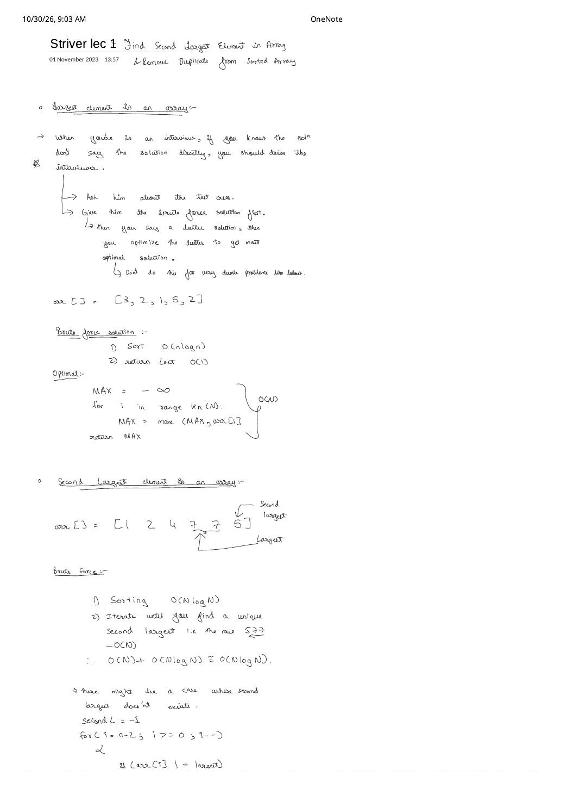
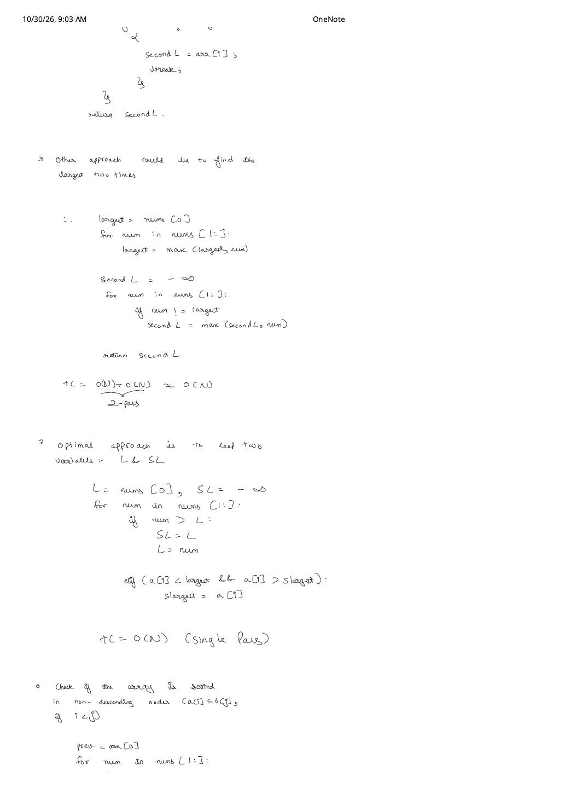
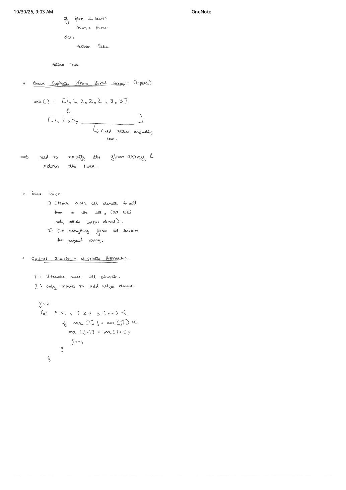
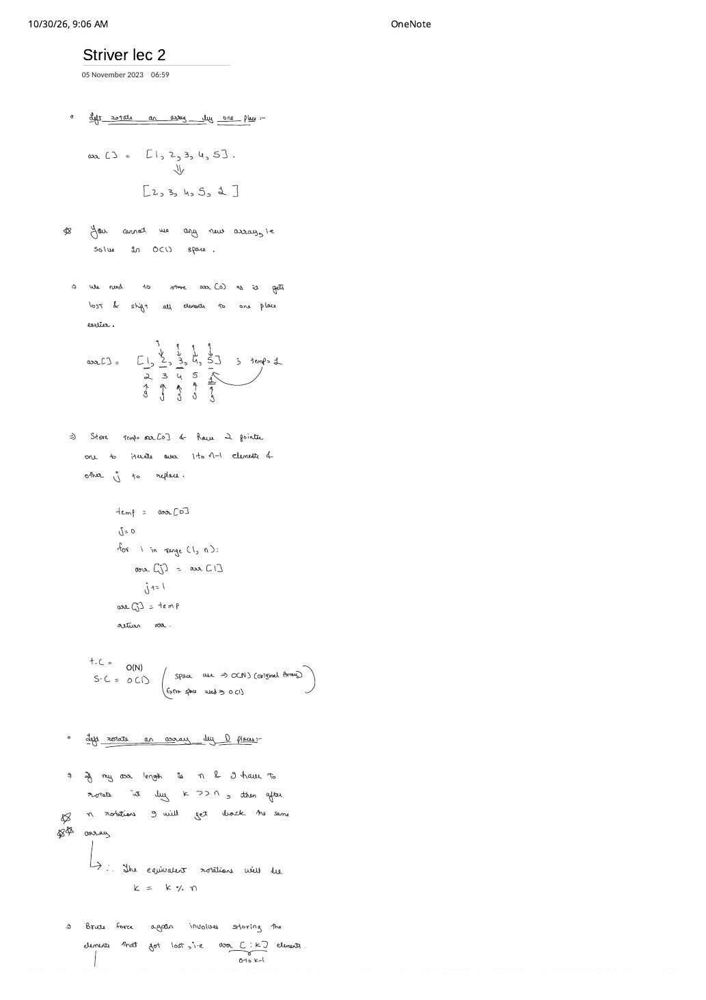
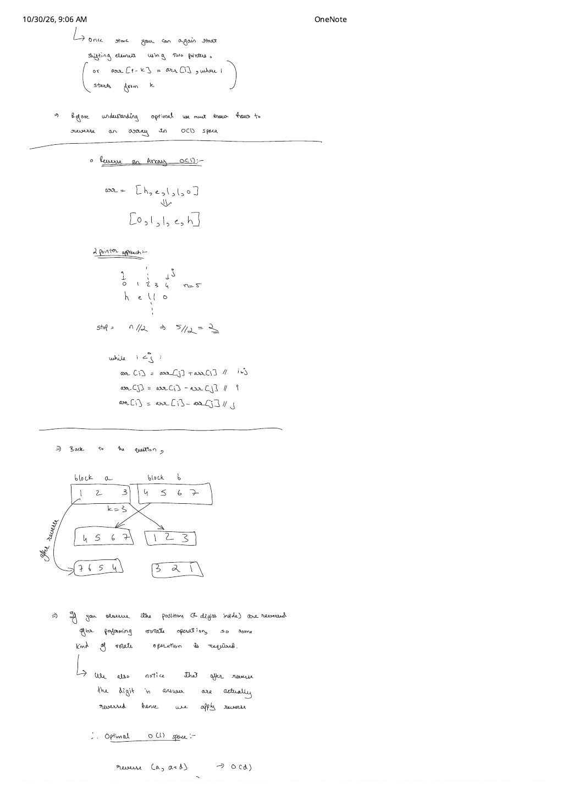
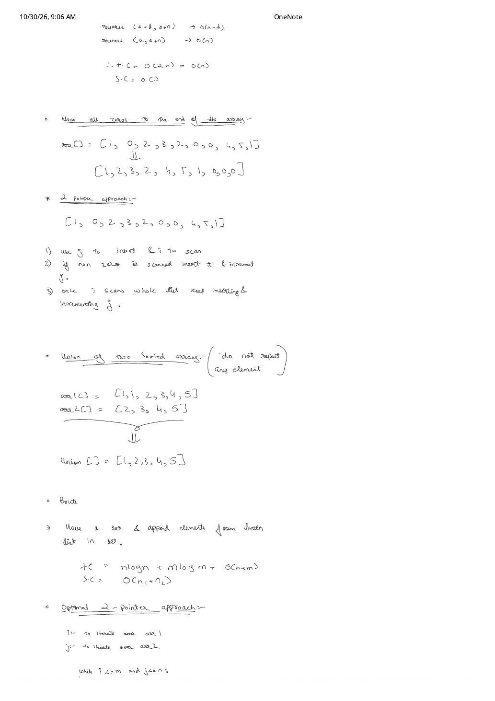
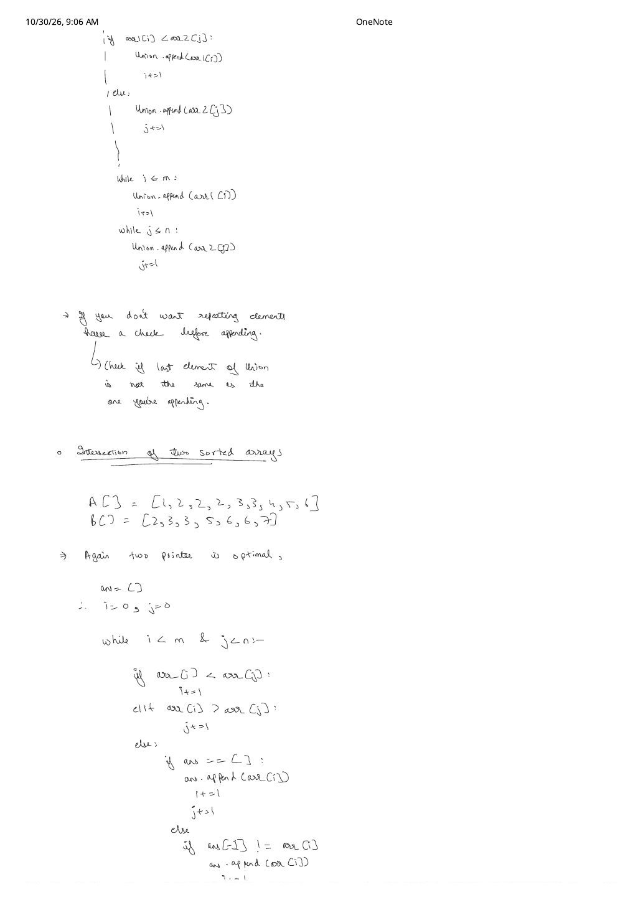
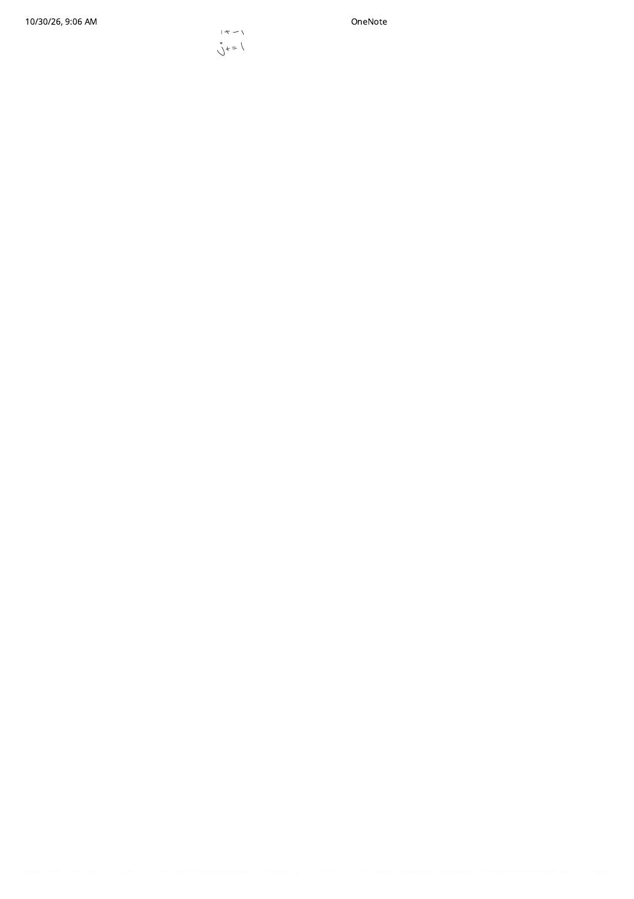

Part 1: Array Fundamentals, In-Place Rotations, Bitwise XOR & Prefix-Sum Subarrays
Expanded from handwritten competitive coding study notes (01_Striver_lec_1.pdf, 02_Striver_lec_2.pdf, 03_Striver_lec_3.pdf, 04_Striver_lecture_4.pdf — 12 pages) · Jump to original scans
The first four lectures of the Arrays notebook establish the core single-pass and two-pointer idioms that every harder array problem builds upon. Following the exact flow of the handwritten pages, each problem moves from sorting/set baselines ($\mathcal{O}(n \log n)$) to two-pass intermediates ($\mathcal{O}(2n)$) and finally to an optimal single-pass or $\mathcal{O}(1)$-extra-space invariant.
Interview Framing Protocol (Lecture 1, Page 1)
- Clarify test cases first: Can elements be negative or zero? Are duplicates permitted? What sentinel should be returned if no valid answer exists (e.g.,
[7, 7, 7]for second largest)? - Walk the Brute $\to$ Better $\to$ Optimal ladder: State the sorting or nested-loop baseline and its bottleneck before presenting the single-pass invariant — except on trivial warmups (like array maximum) where pretending to sort first wastes time.
1. Lecture 1 — Order Statistics, Sortedness & In-Place Deduplication
1.1 Largest & Second Largest Element Without Sorting
For finding the largest element in arr = [3, 2, 1, 5, 2], sorting takes $\mathcal{O}(n \log n)$ just to read arr[n - 1], whereas tracking a running maxi = arr[0] solves it in one $\mathcal{O}(n)$ pass and $\mathcal{O}(1)$ space.
Finding the strictly second largest distinct element in arr = [1, 2, 4, 7, 7, 5] exposes the classic duplicate trap: here the maximum is 7 (appearing twice) and the second largest is 5, while an all-equal array like [7, 7, 7] has no second largest element.
- Brute Force ($\mathcal{O}(n \log n)$ time, $\mathcal{O}(1)$ extra space): Sort ascending ($\to$
[1, 2, 4, 5, 7, 7]). You cannot blindly returnarr[n - 2]becausearr[n - 2] == 7 == largest! You must scan backwards from $i = n - 2$ down to $0$ untilarr[i] != largest, adding an $\mathcal{O}(n)$ worst-case tail scan. - Better — Two-Pass ($\mathcal{O}(2n)$ time, $\mathcal{O}(1)$ space): Pass 1 finds
largest = 7. Pass 2 initializessecondL = -1(orLONG_MINif negatives exist) and updatessecondL = max(secondL, x)wheneverx != largest. - Optimal — Single-Pass Champion & Runner-Up ($\mathcal{O}(n)$ time, $\mathcal{O}(1)$ space): Maintain
largest($L$) andsecondLargest($SL$) simultaneously:- Whenever a new element
x > Larrives, the old champion is demoted directly to runner-up:SL = L, thenL = x. - Otherwise, if
x < L && x > SL,xbeats the current runner-up without tying the champion:SL = x. (Notice howx == Lis cleanly ignored!)
- Whenever a new element
Single-Pass Trace on arr = [1, 2, 4, 7, 7, 5]
Init: L = 1, SL = -1•
x = 2 > 1 $\implies$ SL = 1, L = 2•
x = 4 > 2 $\implies$ SL = 2, L = 4•
x = 7 > 4 $\implies$ SL = 4, L = 7•
x = 7 == L $\implies$ both branches false (duplicate max ignored; SL stays 4)•
x = 5: 5 < 7 && 5 > 4 $\implies$ SL = 5 (final answer: 5).
#include <bits/stdc++.h>
using namespace std;
// Returns strictly second-largest distinct value, or -1 if none exists
// (use LLONG_MIN instead of -1 when negative values are permitted).
int secondLargest(const vector<int>& arr) {
if (arr.size() < 2) return -1;
int largest = arr[0];
int sLargest = -1; // or INT_MIN if negatives exist (with a found flag)
for (size_t i = 1; i < arr.size(); ++i) {
if (arr[i] > largest) {
sLargest = largest;
largest = arr[i];
} else if (arr[i] < largest && arr[i] > sLargest) {
sLargest = arr[i];
}
}
return sLargest;
}1.2 Check Non-Descending Order & Remove Duplicates In-Place (LC 26)
Check if Sorted: An array is sorted in non-descending order iff $\text{arr}[i] \le \text{arr}[j]$ for all $i < j$. By transitivity of $\le$, checking adjacent pairs $\text{arr}[i - 1] \le \text{arr}[i]$ for $i = 1 \dots n - 1$ is both necessary and sufficient ($\mathcal{O}(n)$ time, $\mathcal{O}(1)$ space).
Subtle Bug in Handwritten Pseudocode Checks
1. In Lecture 1 Page 3's Python sketch for checking sortedness, writing strict prev < num rejects valid non-descending arrays containing equal neighbours like [1, 2, 2, 3] — always use arr[i] >= arr[i - 1].
2. In Lecture 1 Page 3's deduplication loop, writing arr[j+1] = arr[i++] inside a for (int i = 1; i < n; i++) header increments i twice whenever a unique element is copied, skipping the very next index! Let the for loop own i++ and write arr[++j] = arr[i].
Remove Duplicates from Sorted Array (LC 26): Given arr = [1, 1, 2, 2, 2, 3, 3], modify the array in-place so the first $k$ slots contain the unique values [1, 2, 3, ...] and return $k$.
- Brute Force: Insert all $n$ elements into an ordered
std::set<int>($\mathcal{O}(n \log n)$ time, $\mathcal{O}(n)$ space), then copy the set elements back intoarr[0..k-1]($\mathcal{O}(n)$). - Optimal Read/Write Two Pointers ($\mathcal{O}(n)$ time, $\mathcal{O}(1)$ space): Because equal elements are contiguous in a sorted array, keep
j = 0at the last unique element written and sweepifrom $1$ to $n - 1$. Wheneverarr[i] != arr[j], advancejand writearr[j] = arr[i]. Returnj + 1.
bool isNonDescending(const vector<int>& arr) {
for (size_t i = 1; i < arr.size(); ++i) {
if (arr[i] < arr[i - 1]) return false;
}
return true;
}
int removeDuplicates(vector<int>& arr) {
if (arr.empty()) return 0;
int j = 0; // index of last committed unique element
for (int i = 1; i < (int)arr.size(); ++i) {
if (arr[i] != arr[j]) {
arr[++j] = arr[i];
}
}
return j + 1; // count of unique elements
}2. Lecture 2 — Cyclic Rotations, Zero Compaction & Sorted Set Operations
2.1 Left Rotate by 1 Place & by $D$ Places (The 3-Reverse Proof)
Left Rotate by 1: On [1, 2, 3, 4, 5] $\to$ [2, 3, 4, 5, 1], save temp = arr[0], shift arr[i] into arr[i - 1] for $i = 1 \dots n - 1$, and place arr[n - 1] = temp. Note the interview distinction emphasized on Page 1 of Lecture 2: the total memory touched by the algorithm is $\mathcal{O}(n)$ (the input array itself), while the extra auxiliary space is $\mathcal{O}(1)$.
Left Rotate by $D$ Places: First reduce $d \gets d \bmod n$, because every full cycle of $n$ shifts restores the original array. A brute-force buffer stores the lost prefix arr[0..d-1] in $\mathcal{O}(d)$ temporary space, shifts the remaining $n - d$ elements left, and copies the buffer to the back in $\mathcal{O}(n + d)$ time.
To eliminate the $\mathcal{O}(d)$ buffer, partition the array into two contiguous blocks $A = \text{arr}[0..d-1]$ and $B = \text{arr}[d..n-1]$. Left rotation transforms $AB \longrightarrow BA$. Using an $\mathcal{O}(1)$-space two-pointer reverse(l, r) helper (swapping symmetric endpoints until $l \ge r$, stopping at $\lfloor n / 2 \rfloor$), observe the algebraic identity:
// Left-rotate arr by d places in O(n) time and O(1) extra space.
// (For LeetCode 189 Right Rotate by k: reverse full [0..n), then [0..k), then [k..n).)
void leftRotateByD(vector<int>& arr, int d) {
int n = arr.size();
if (n == 0) return;
d %= n;
if (d == 0) return;
reverse(arr.begin(), arr.begin() + d); // O(d)
reverse(arr.begin() + d, arr.end()); // O(n - d)
reverse(arr.begin(), arr.end()); // O(n)
}2.2 Move Zeros to End (LC 283) & Sorted Union / Intersection
Move All Zeros to End: On arr = [1, 0, 2, 3, 2, 0, 0, 4, 5, 1], we want [1, 2, 3, 2, 4, 5, 1, 0, 0, 0] with relative order of non-zeros intact. Maintain write pointer j = 0 and scan pointer i = 0 .. n - 1: whenever arr[i] != 0, swap arr[j++] with arr[i]. Every non-zero steps directly into its final slot in one $\mathcal{O}(n)$ pass and $\mathcal{O}(1)$ space.
Union of Two Sorted Arrays (No Duplicates): Given arr1 = [1, 1, 2, 3, 4, 5] and arr2 = [2, 3, 4, 5], inserting into an ordered set costs $\mathcal{O}(m \log m + n \log n)$ time and $\mathcal{O}(m + n)$ tree space. Instead, walk i across arr1 and j across arr2 like merge-sort's merge step, guarding every push with unionArr.empty() || unionArr.back() != x to suppress duplicates in $\mathcal{O}(m + n)$ time and $\mathcal{O}(1)$ auxiliary space.
Intersection of Two Sorted Arrays: On A = [1, 2, 2, 2, 3, 3, 4, 5, 6] and B = [2, 3, 3, 5, 6, 6, 7], advance i when A[i] < B[j] and j when A[i] > B[j]. When A[i] == B[j], push A[i] and advance both pointers (adding ans.empty() || ans.back() != A[i] as written on Lecture 2 Page 4 if unique intersection LC 349 is requested, or omitting that guard if multiset intersection LC 350 [2, 3, 3, 5, 6] is requested).
void moveZeroes(vector<int>& nums) {
int j = 0;
for (int i = 0; i < (int)nums.size(); ++i) {
if (nums[i] != 0) swap(nums[j++], nums[i]);
}
}
vector<int> unionSortedUnique(const vector<int>& a, const vector<int>& b) {
vector<int> res;
auto pushUnique = [&](int val) {
if (res.empty() || res.back() != val) res.push_back(val);
};
size_t i = 0, j = 0;
while (i < a.size() && j < b.size()) {
if (a[i] <= b[j]) pushUnique(a[i++]);
else pushUnique(b[j++]);
}
while (i < a.size()) pushUnique(a[i++]);
while (j < b.size()) pushUnique(b[j++]);
return res;
}
vector<int> intersectionSortedUnique(const vector<int>& a, const vector<int>& b) {
vector<int> ans;
size_t i = 0, j = 0;
while (i < a.size() && j < b.size()) {
if (a[i] < b[j]) ++i;
else if (a[i] > b[j]) ++j;
else {
if (ans.empty() || ans.back() != a[i]) ans.push_back(a[i]);
++i;
++j;
}
}
return ans;
}3. Lecture 3 — Missing Number, Consecutive Streaks & Bitwise XOR
3.1 Find the Missing Number in $1 \dots N$ (LC 268)
Given $N - 1$ distinct integers from $\{1, 2, \dots, N\}$ such as arr = [1, 2, 4, 5] with $N = 5$ (missing 3):
- Brute Force ($\mathcal{O}(N^2)$ time, $\mathcal{O}(1)$ space): For each candidate $v \in [1, N]$, scan
arrlinearly. - Better — Frequency Array ($\mathcal{O}(2N)$ time, $\mathcal{O}(N)$ space): Mark
hash[arr[i]] = 1in Pass 1; return the index $v \in [1, N]$ withhash[v] == 0in Pass 2. - Optimal A — Gauss Arithmetic Sum ($\mathcal{O}(N)$ time, $\mathcal{O}(1)$ space):
$$\text{Missing} = \frac{N(N + 1)}{2} - \sum_{i=0}^{N-2} \text{arr}[i] = \frac{5 \times 6}{2} - 12 = 15 - 12 = 3$$
Caveat: When $N = 10^5$, $N(N + 1)/2 \approx 5 \times 10^9$ overflows 32-bit signed
int($\approx 2.14 \times 10^9$), requiringlong long. - Optimal B — Bitwise XOR Cancellation ($\mathcal{O}(N)$ time, $\mathcal{O}(1)$ space, Overflow-Free): Using $x \oplus x = 0$, $x \oplus 0 = x$, and commutativity/associativity of $\oplus$, XOR every expected value in $\{1, \dots, N\}$ against every array element in a single loop. Every present number pairs up and vanishes to $0$, leaving only the unpaired missing value — and intermediate values never exceed $\sim 2N$!
3.2 Max Consecutive Ones (LC 485) & Single Number (LC 136)
- Max Consecutive Ones: On
[1, 0, 1, 1, 0, 1], incrementcnton1(updatingans = max(ans, cnt)) and resetcnt = 0on0$\implies$ans = 2in $\mathcal{O}(N)$ time, $\mathcal{O}(1)$ space. - Single Number (every element appears twice except one): On
[1, 1, 2, 3, 3, 4, 4], the exact same XOR identity collapses $(1 \oplus 1) \oplus 2 \oplus (3 \oplus 3) \oplus (4 \oplus 4) = 0 \oplus 2 \oplus 0 \oplus 0 = 2$ in $\mathcal{O}(N)$ time and $\mathcal{O}(1)$ space.
// Missing number in [1..N] using single-pass overflow-free XOR
int missingNumber1ToN(const vector<int>& arr, int N) {
int xorAll = N; // covers the final index N
for (int i = 0; i < N - 1; ++i) {
xorAll ^= (i + 1) ^ arr[i];
}
return xorAll;
}
int findMaxConsecutiveOnes(const vector<int>& nums) {
int cnt = 0, maxCnt = 0;
for (int x : nums) {
if (x == 1) maxCnt = max(maxCnt, ++cnt);
else cnt = 0;
}
return maxCnt;
}
int singleNumber(const vector<int>& nums) {
int xr = 0;
for (int x : nums) xr ^= x;
return xr;
}4. Lecture 4 — Longest Subarray with Given Sum $K$
Recall that a subarray must be a contiguous slice: in arr = [1, 2, 3, 1, 1, 1, 4, 2, 3] with $K = 3$, [1, 1, 1] (length 3) is valid whereas non-contiguous {1, 4, 2} is a subsequence. Surprisingly, the optimal algorithm depends completely on whether negative numbers can appear.
4.1 General Case ($\text{arr}[i] \in \mathbb{Z}$, Negatives & Zeros Allowed) — Prefix Sum + Hash Map
Suppose we stand at index $\text{curr}$ and the cumulative prefix sum $\text{arr}[0..\text{curr}]$ equals $S$. If some contiguous subarray ending at $\text{curr}$ sums to $K$, then the complementary prefix before it must sum to $S - K$:
idx achieved prefix sum $S - K$, then arr[idx + 1 .. curr] sums to $S - (S - K) = K$ and has length $\text{curr} - \text{idx}$.- Never overwrite an existing prefix sum in the map! To maximize $\text{curr} - \text{idx}$, we want
idxas far left as possible. Onarr = [2, 0, 0, 3]with $K = 3$, prefix sum2appears at indices0, 1, 2; overwritingmp[2] = 2shrinks the discovered subarray from[0, 0, 3](length 3) to[3](length 1). Only insert whenmp.find(sum) == mp.end()! - Ordered vs. Unordered Map (Lecture 4, Page 1):
std::mapguarantees $\mathcal{O}(N \log N)$ worst-case time;std::unordered_mapruns in $\mathcal{O}(N)$ expected time but degrades to $\mathcal{O}(N^2)$ under adversarial hash collisions. Both use $\mathcal{O}(N)$ space, and this is provably optimal when negatives are allowed.
4.2 Non-Negative / Positive Case ($\text{arr}[i] \ge 0$) — $\mathcal{O}(1)$-Space Variable Sliding Window
When every element is non-negative, expanding right can only increase (or preserve) the window sum, and advancing left can only decrease (or preserve) it. Monotonicity unlocks a two-pointer sliding window: add arr[right], shrink left++ while left <= right && sum > K, and record right - left + 1 whenever sum == K. Both pointers move forward at most $N$ times $\implies \mathcal{O}(2N) = \mathcal{O}(N)$ time and $\mathcal{O}(1)$ space! (If negatives exist, e.g. [4, -2, 1] for $K = 3$, shrinking when $4 > 3$ prematurely discards index $0$ even though $-2$ would have pulled the sum back down.)
// Optimal when arr contains positives, zeros, AND negatives: O(N) avg / O(N log N) map, O(N) space
int longestSubarraySumK_AllReals(const vector<int>& arr, long long K) {
unordered_map<long long, int> firstIdx;
firstIdx[0] = -1; // handles subarrays starting at index 0 (where sum == K)
long long prefix = 0;
int maxLen = 0;
for (int i = 0; i < (int)arr.size(); ++i) {
prefix += arr[i];
auto it = firstIdx.find(prefix - K);
if (it != firstIdx.end()) {
maxLen = max(maxLen, i - it->second);
}
// Keep ONLY the earliest index to maximize i - idx across zeros!
if (firstIdx.find(prefix) == firstIdx.end()) {
firstIdx[prefix] = i;
}
}
return maxLen;
}
// Optimal when all arr[i] >= 0 (positives & zeros only): O(N) time, O(1) extra space
int longestSubarraySumK_NonNegative(const vector<int>& arr, long long K) {
int left = 0, maxLen = 0;
long long sum = 0;
for (int right = 0; right < (int)arr.size(); ++right) {
sum += arr[right];
while (left <= right && sum > K) {
sum -= arr[left++];
}
if (sum == K) {
maxLen = max(maxLen, right - left + 1);
}
}
return maxLen;
}5. Part 1 Complexity Summary
| Problem | Brute Force | Better | Optimal Time & Extra Space |
|---|---|---|---|
| Second Largest Element | Sort + tail scan: $\mathcal{O}(n \log n)$, $\mathcal{O}(1)$ | 2-pass max: $\mathcal{O}(2n)$, $\mathcal{O}(1)$ | 1-pass (L, SL): $\mathcal{O}(n)$, $\mathcal{O}(1)$ |
| Remove Duplicates (Sorted) | Ordered set: $\mathcal{O}(n \log n)$, $\mathcal{O}(n)$ | — | Read/write pointers: $\mathcal{O}(n)$, $\mathcal{O}(1)$ |
| Left Rotate by $D$ Places | Temp prefix buffer: $\mathcal{O}(n + d)$, $\mathcal{O}(d)$ | — | 3-step reverse: $\mathcal{O}(2n)$, $\mathcal{O}(1)$ |
| Sorted Union / Intersection | Set / nested scan: $\mathcal{O}((m+n)\log(m+n))$ | — | Merge two pointers: $\mathcal{O}(m + n)$, $\mathcal{O}(1)$ aux |
| Missing Number ($1..N$) | Linear search per $v$: $\mathcal{O}(N^2)$, $\mathcal{O}(1)$ | Hash array: $\mathcal{O}(2N)$, $\mathcal{O}(N)$ | XOR (or 64-bit Gauss sum): $\mathcal{O}(N)$, $\mathcal{O}(1)$ |
| Longest Subarray Sum $= K$ | Check all $(l, r)$: $\mathcal{O}(N^2)$, $\mathcal{O}(1)$ | Prefix map ($\mathbb{Z}$): $\mathcal{O}(N)$, $\mathcal{O}(N)$ | Sliding window ($\text{arr}[i] \ge 0$): $\mathcal{O}(2N)$, $\mathcal{O}(1)$ |
From the Handwritten Notes
Expand the original handwritten pages below to inspect the exact derivations, dry runs, and annotations from Lectures 1–4:
View original note — Striver Lec 1, Page 1 (Interview framing, Largest & Second Largest setup)


01_Striver_lec_1.pdf p. 1: Interview progression rule, Largest Element, and Second Largest sorting baseline on [1, 2, 4, 7, 7, 5].View original note — Striver Lec 1, Page 2 (2-pass vs. 1-pass Second Largest & Check Sorted)


01_Striver_lec_1.pdf p. 2: Two-pass $\mathcal{O}(2N)$ vs. single-pass L & SL Second Largest, plus non-descending sortedness check.View original note — Striver Lec 1, Page 3 (Remove Duplicates from Sorted Array in-place)


01_Striver_lec_1.pdf p. 3: Set-based brute force vs. two-pointer read/write deduplication on [1, 1, 2, 2, 2, 3, 3].View original note — Striver Lec 2, Page 1 (Left Rotate by 1 & modular reduction $k \bmod n$)


02_Striver_lec_2.pdf p. 1: Left rotate by 1 in $\mathcal{O}(1)$ extra space, algorithm space vs. auxiliary space, and $k = k \bmod n$ for $D$-place rotation.View original note — Striver Lec 2, Page 2 (In-place Reverse & Block-Reversal diagram)


02_Striver_lec_2.pdf p. 2: Two-pointer $\mathcal{O}(1)$ reversal on [h, e, l, l, o] and block-reversal insight on [1, 2, 3 | 4, 5, 6, 7].View original note — Striver Lec 2, Page 3 (3-Reverse complexity, Move Zeros & Sorted Union setup)


02_Striver_lec_2.pdf p. 3: $\mathcal{O}(2n)$ rotation bound, two-pointer Move Zeros on [1, 0, 2, 3, 2, 0, 0, 4, 5, 1], and Sorted Union setup.View original note — Striver Lec 2, Page 4 (Sorted Union & Intersection two-pointer merge)


02_Striver_lec_2.pdf p. 4: Deduplicating union merge and sorted intersection on [1, 2, 2, 2, 3, 3, 4, 5, 6] & [2, 3, 3, 5, 6, 6, 7].View original note — Striver Lec 2, Page 5 (Intersection pointer increment continuation)


02_Striver_lec_2.pdf p. 5: Closing i += 1, j += 1 lines of the sorted intersection routine.View original note — Striver Lec 3, Page 1 (Missing Number: Brute, Hashing, Bitwise XOR & Gauss Sum)

03_Striver_lec_3.pdf p. 1: Four derivations for Missing Number on [1, 2, 4, 5] ($N = 5$), showing XOR pair cancellation and $N(N+1)/2$.View original note — Striver Lec 3, Page 2 (Max Consecutive Ones & Single Number via XOR)

03_Striver_lec_3.pdf p. 2: Running streak reset for Max Consecutive Ones and XOR elimination on [1, 1, 2, 3, 3, 4, 4].View original note — Striver Lec 4, Page 1 (Longest Subarray Sum K: Sliding Window vs. Prefix Hash Map)

04_Striver_lecture_4.pdf p. 1: Sliding window for positives vs. prefix - K hash lookup for $\mathbb{R}$, ordered vs. unordered map complexity, and prefix trace.View original note — Striver Lec 4, Page 2 (Prefix Sum Index Meaning & Subarray Span $S - t$)

04_Striver_lecture_4.pdf p. 2: Visual proof of why a stored index pointing to prefix sum $S - t$ certifies a subarray of sum $t$ ending at curr.